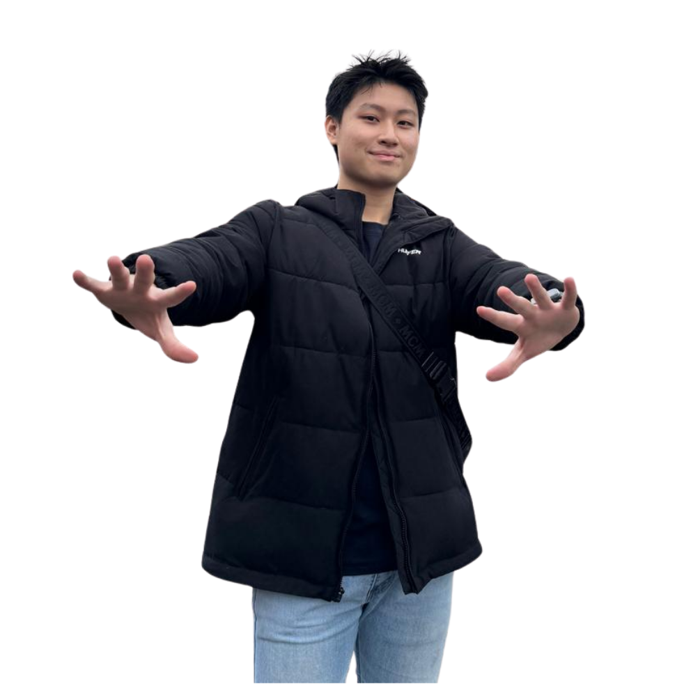
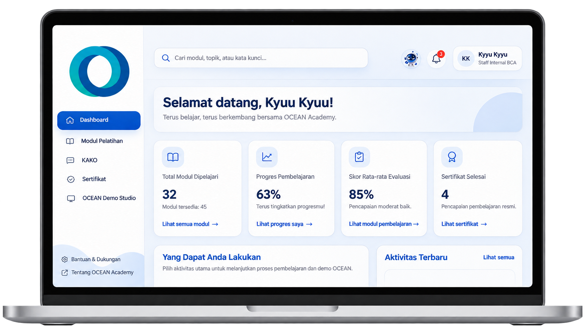
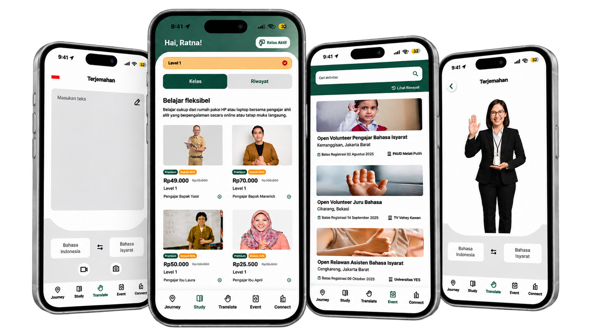
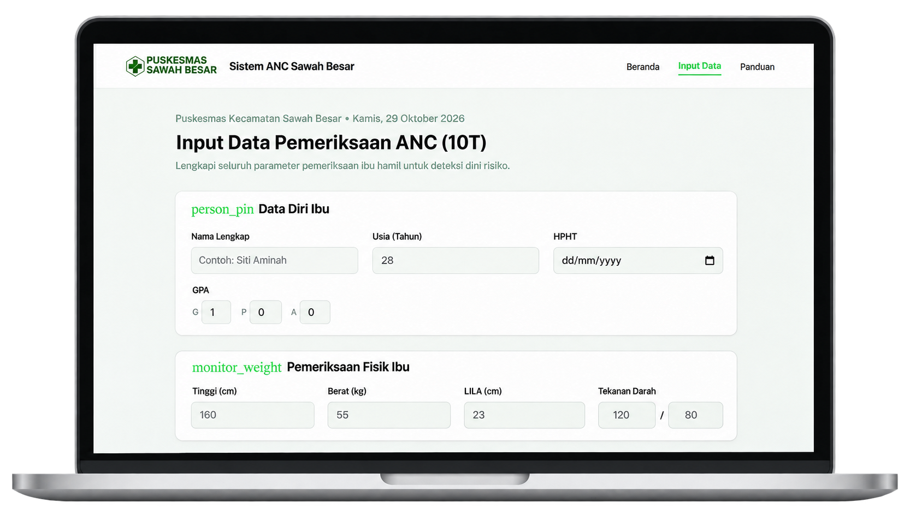
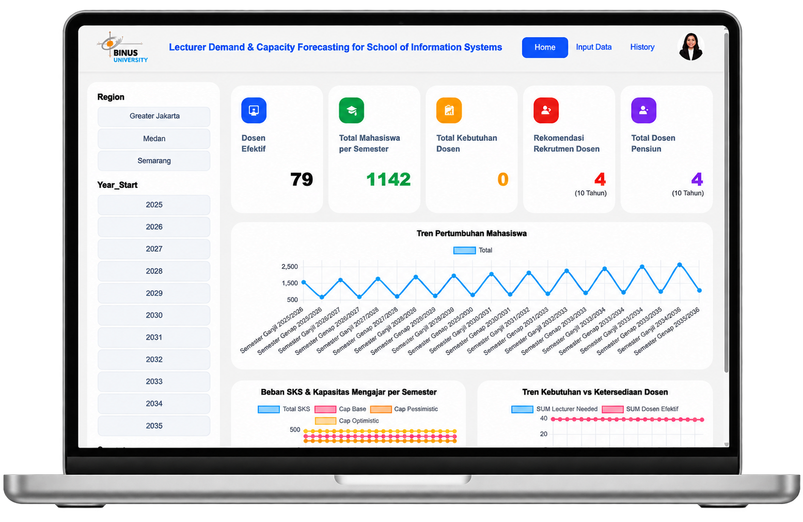

UI/UX Design
Designing intuitive digital experiences through user-centered thinking, wireframes, and prototypes.

An Information Systems student with a creative mindset and a passion for connecting business needs with technology.
I study at BINUS University, where I have built hands-on experience in project coordination, business analysis, information systems education, UI/UX design, and digital communication.
As a Teaching Assistant, I support around 300 students per semester across 10 courses. I also enjoy collaborating on projects that turn complex challenges into clear, practical solutions.
Bachelor's Degree in Information Systems · Expected 2027
Combining creative thinking with structured problem-solving to create meaningful outcomes for people and businesses.
Designing intuitive digital experiences through user-centered thinking, wireframes, and prototypes.
Understanding business needs, translating requirements, and shaping practical system solutions.
Coordinating teams, tracking milestones, and keeping project activities aligned.
Creating visual communication, promotional materials, and social media content.
A selection of business solutions, digital products, research, and visual design work.
HAVE A PROJECT IN MIND? ↗
A digital learning and AI-powered platform concept designed to strengthen BCA employees' understanding of corporate banking products.

A user-friendly communication application concept designed to support individuals with speech difficulties.

A maternal health risk assessment platform applying machine learning to support early identification of pregnancy risks.

A forecasting platform supporting academic workforce planning through lecturer demand predictions and recruitment recommendations.
A collection of promotional posters, product infographics, and marketing content created to communicate product value through clear visuals.
Learning by teaching, collaborating, and delivering projects with people from different backgrounds.
BINUS University · Information Systems Laboratory
BINUS University · School of Information Systems
BINUS University
BINUS University · First Year Program
BINUS University · First Year Program
A few moments that reflect my commitment to learning, contribution, and continuous improvement.
Feel free to reach out. I'm open to part-time, freelance, and project-based opportunities.